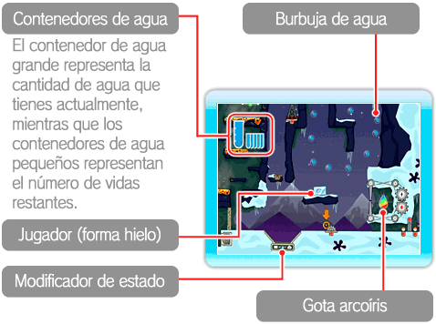
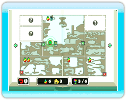
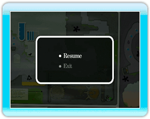

8 |
Pantallas de juego |
 |
|
● Pantalla de juego 

● Pantalla del mapa En algunos de los cuadrantes podrás ver objetos con forma de gota en la esquina superior izquierda, lo cual indica que hay una gota arcoíris escondida en ese cuadrante. Si la gota no tiene color, significa que aún no ha sido encontrada, así que asegúrate de revisar y buscar por ella.
Además, podrás ver iconos que representan libros teleportadores

● Menú de pausa
|
 mientras te encuentres jugando, podrás acceder al mapa del capítulo actual. Oprime izquierda o derecha en
mientras te encuentres jugando, podrás acceder al mapa del capítulo actual. Oprime izquierda o derecha en  para pasar de página.
para pasar de página.
 mientras te encuentres jugando para pausar el juego e ir al menú de pausa. Ahí se mostrarán las siguientes opciones:
mientras te encuentres jugando para pausar el juego e ir al menú de pausa. Ahí se mostrarán las siguientes opciones: |
 |
 |